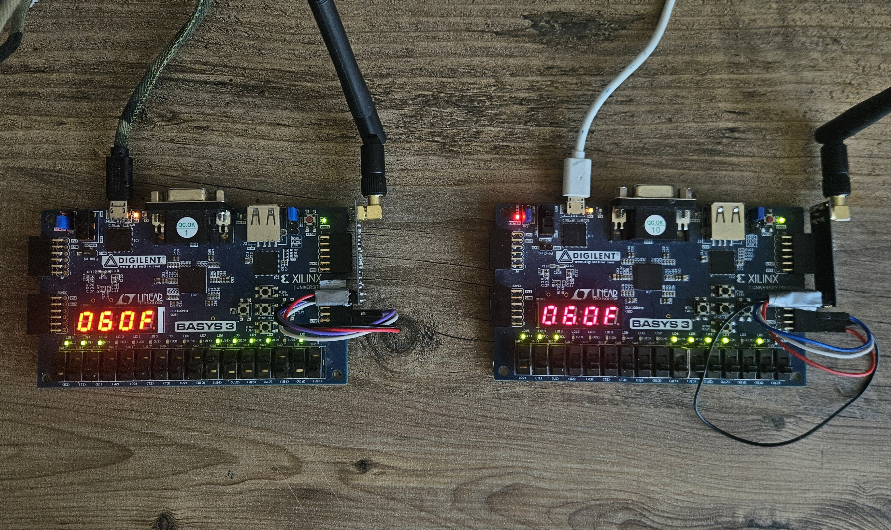
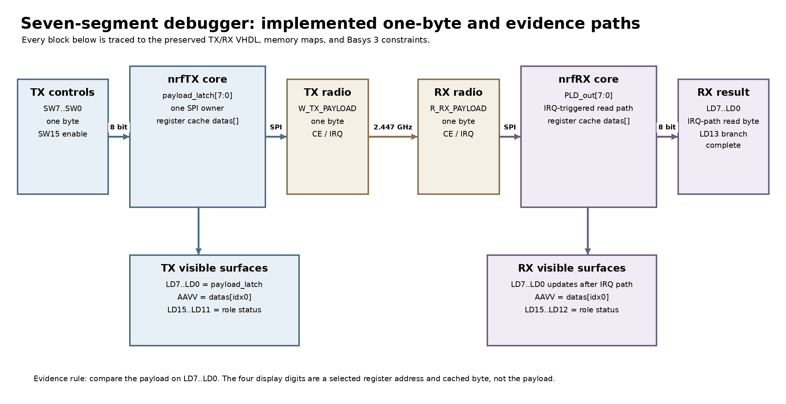
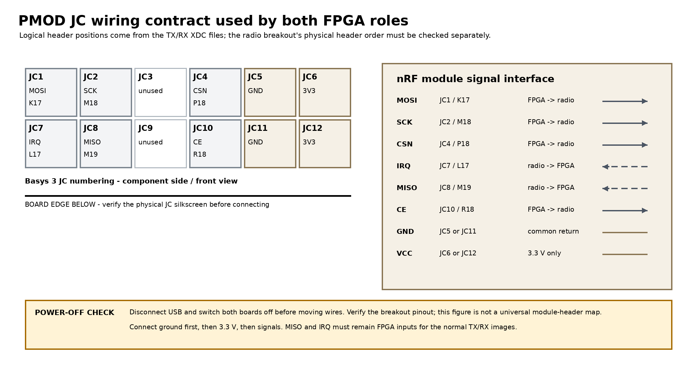
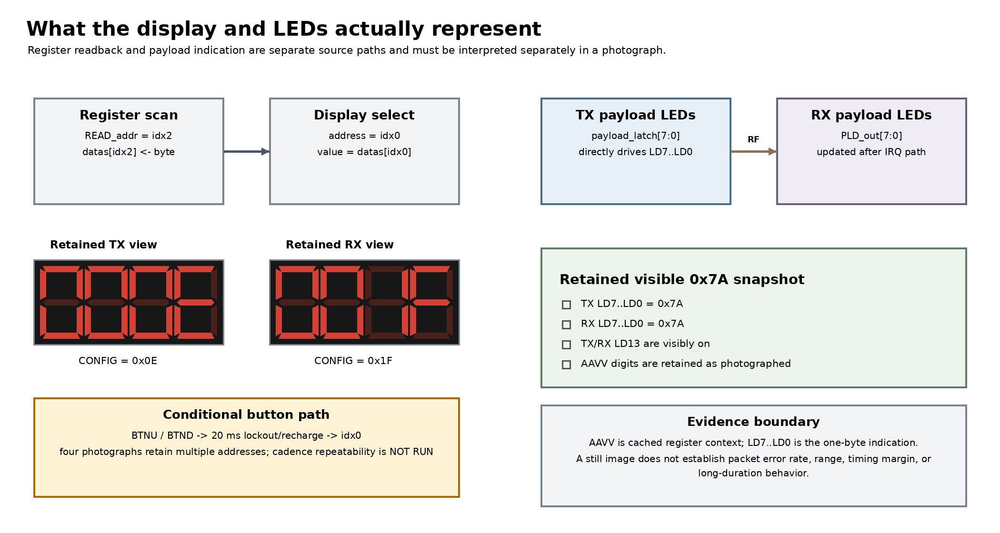

{kind=link}
Problem
Make a first radio link understandable on the boards themselves, without depending on a large host application or treating the nRF24L01 as an opaque peripheral.
PROJECT 04 / nRF 7-SEG
A compact historical one-byte transmitter/receiver pair for two Basys 3 boards. Switches select the transmitted byte, receiver LEDs show the captured byte, and both roles expose selected nRF24L01 register address and value on the seven-segment display.

Make a first radio link understandable on the boards themselves, without depending on a large host application or treating the nRF24L01 as an opaque peripheral.
Separate TX and RX state machines share SPI helpers, register readback, button-controlled register selection, seven-segment formatting, and a short UART event-timing helper.
Both roles were freshly rebuilt and fully routed for Pmod JC with zero route errors. The boards were not programmed in that rebuild, so this is implementation evidence rather than a fresh over-the-air demonstration.
data_input[7:0] from the board switches and retains the selected diagnostic byte.W_TX_PAYLOAD, pulses CE, then reads STATUS after the radio event.led_out[7:0].RsTx emits a short UART timing record on TX_DS or RX_DR events; this helper is diagnostic, not a sustained data transport.


| Evidence | What it establishes | Publication state |
|---|---|---|
| TX source | Switch-selected byte capture, payload write, CE pulse, STATUS handling, register readback, and display logic are retained. | Source retained |
| RX source | IRQ-driven one-byte payload read, LED output, register refresh, and return-to-listening flow are retained. | Source retained |
| TX JC rebuild | Vivado 2025.2 routed 1,044/1,044 nets with zero route errors; WNS/WHS were +0.440/+0.117 ns. | PASS — implementation |
| RX JC rebuild | Vivado 2025.2 routed 735/735 nets with zero route errors; WNS/WHS were +0.348/+0.079 ns. | PASS — implementation |
| Routed DRC | Both roles had zero DRC errors; the retained reports contain only the inherited CFGBVS-1 warning. | PASS with disclosed warning |
| Retained static photographs | Four photographs preserve board, wiring, and display arrangements, but they are not tied to a recorded bitstream identity, programming/re-arm sequence, and controlled payload-to-received-byte transfer. | Context only |
| Controlled hardware record | The boards were not programmed in the fresh rebuild, and no bitstream-bound programming, re-arm, SPI, or RF-transfer record was retained. | NOT RUN |
Documentation basis: seven-segment-debugger/README.md and docs/evidence/2026-08-20-jc-rebuild/README.md. The routed rebuild is not presented as fresh hardware proof.
The radio setup enables dynamic payload support, but this historical design intentionally transfers only one byte. Its fresh evidence proves routed implementation, not current programming, SPI electrical behavior, or over-the-air delivery.
Program the retained TX and RX images, capture both register displays and the JC SPI signals, then retain one labeled switch-to-payload-to-LED demonstration.
{kind=link}
{kind=link}
{kind=link}